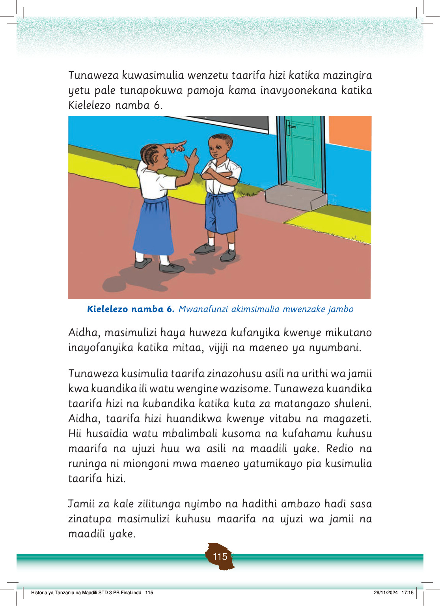

Tunaposimulia tunawapa taarifa watu wengine kuhusu maarifa na ujuzi wa asili na urithi tulionao.
Bila masimulizi, watu wengine hawawezi kupata taarifa za maarifa na ujuzi wa asili wa jamii zetu.
Zoezi la 2
1.
Taja njia nyingine zinazoweza kutumika ili kupata taarifa za maarifa na ujuzi wa asili na urithi wa kihistoria.
Thamani ya asili na urithi wa kihistoria katika jamii
Asili na urithi uliopo umetunza kumbukumbu za jamii zetu.
Kazi ya kufanya namba 4
Fikiri na andika thamani za asili za jamii kwa maendeleo ya kiuchumi na kijamii.
Asili za jamii kama vile tamaduni, mavazi, vyakula, michezo na urithi wa kihistoria vina thamani katika:
(a) Kutambulisha urithi wa kihistoria uliopo katika jamii;
(b) Kutupa ushahidi wa chimbuko la asili za jamii na maadili ya jamii zetu kwa sasa;
(c) Kutoa ushahidi wa asili za tamaduni zetu nchini;
(d) Kupata maarifa na ujuzi wa kutenda maadili katika jamii zetu;
(e) Kupata mapato ya taifa na jamii;
(f) Kupata maarifa na ujuzi wa kujenga misingi ya uzalendo;
(g) Kuendeleza misingi ya maadili ya jamii kama vile umoja, ushirikiano na uhusiano mwema wa kusaidiana katika jamii; na